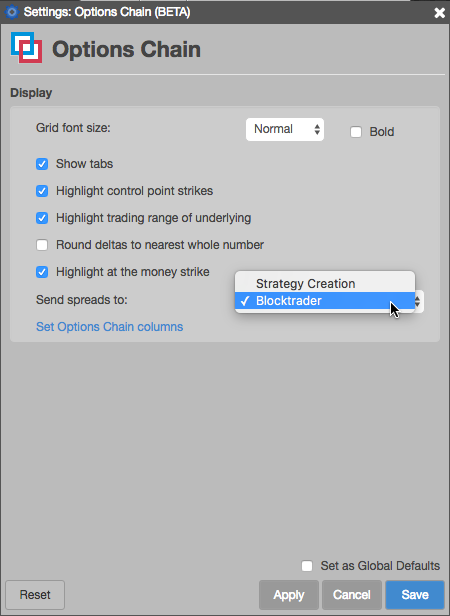
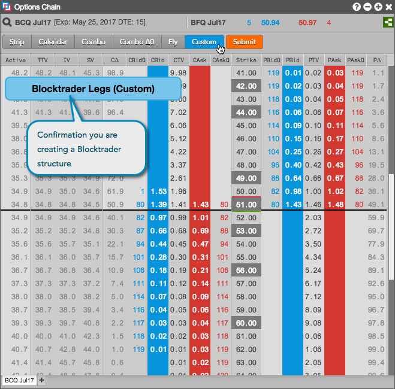
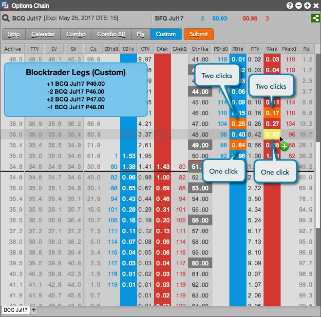

Right-click in the Options Chain and set Send spreads to: to Blocktrader in the context menu.

In the Options Chain widget, click the desired strategy type (Custom, in this case). Alternatively, you can press and hold the Ctrl key to enter Blocktrader mode.

Click the desired legs and leg ratios for the strategy.

Click Submit (or release the Ctrl key if you use that method).
The Blocktrader widget opens seeded with the selected instrument legs.

In the Blocktrader widget, configure the strategy and click Send Block.